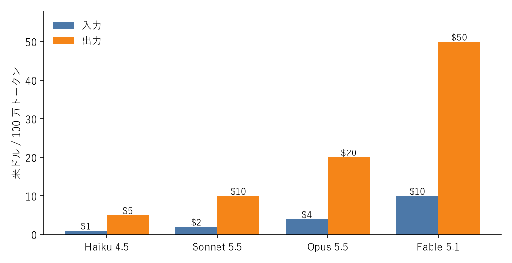

2. Claude の概要
2.1. Claude とは
Claude は、Anthropic 社が開発している大規模言語モデル（LLM）のファミリーです。文章の読解と生成、要約、翻訳、プログラミング、データ分析、画像や PDF の読み取りなど、幅広い知的作業を自然言語の指示で実行できます。
Anthropic は AI の安全性研究に重点を置く企業で、Claude は「有用で、正直で、無害であること」を目標に訓練されています。そのため、危険な依頼を断ったり、確信がない場合はそう伝えたりする振る舞いが組み込まれています。
2.2. 大規模言語モデルの基本
Claude を使いこなすには、LLM の基本的な性質を理解しておくことが重要です。
2.2.1. テキストを予測して生成する
LLM は、与えられたテキストの続きとして最もふさわしいテキストを、少しずつ予測しながら生成します。データベースのように事実を検索して答えているのではなく、訓練で学習した知識と、入力された文脈をもとに文章を組み立てています。この性質から、次の特徴が生まれます。
指示や文脈の与え方によって、出力の質が大きく変わります
もっともらしいが誤った内容（ハルシネーション）を出力することがあります
同じ入力でも、毎回まったく同じ出力になるとは限りません
2.2.2. トークン
LLM はテキストをトークンという単位に分割して処理します。トークンは単語や文字の断片で、英語ではおおむね 1 単語が 1 トークン強、日本語では 1 文字が 1 トークン前後になります。API の料金、入力できる量、出力の上限は、すべてトークン数で決まります。正確なトークン数は、API 入門で紹介するトークン計測 API で確認できます。
2.2.3. コンテキストウィンドウ
1 回の処理で扱える入力と出力の合計トークン数の上限をコンテキストウィンドウと呼びます。現行の主要モデルのコンテキストウィンドウは 100 万トークンで、数百ページの文書や中規模のソースコード一式をまとめて入力できます。
ただし、入力が長いほど料金と応答時間が増えるため、必要な情報に絞って渡すのが基本です。
2.2.4. 知識の期限
モデルの知識は、訓練データを収集した時点までのものです。それ以降の出来事や、社内文書のような非公開の情報は知りません。こうした情報を扱わせるには、プロンプトに資料を含めるか、ツール利用で説明する Web 検索などのツールを使わせます。
2.3. モデルの種類
Claude には性能、速度、料金の異なる複数のモデルがあります。2026 年 10 月時点の主要なモデルは表 2.1 のとおりです。
モデル |
モデル ID |
コンテキスト |
入力料金 |
出力料金 |
位置付け |
|---|---|---|---|---|---|
Claude Fable 5.1 |
|
100 万 |
$10 |
$50 |
最も高性能 |
Claude Opus 5.5 |
|
100 万 |
$4 |
$20 |
高性能で汎用的 |
Claude Sonnet 5.5 |
|
100 万 |
$2 |
$10 |
性能と速度の均衡 |
Claude Haiku 4.5 |
|
20 万 |
$1 |
$5 |
高速かつ低価格 |
料金は 100 万トークンあたりの米ドルです。出力トークンは入力トークンの 5 倍の単価である点に注意してください。

図 2.1 モデル別の料金（100 万トークンあたり、米ドル）
2.3.1. モデルの選び方
モデル選びに迷ったら、まず Claude Opus 5.5 で目的の処理が実現できるかを確かめるのが近道です。そのうえで、次の観点で調整します。
品質が足りない場合は、Claude Fable 5.1 を試します。複雑な推論や長時間の自律的な作業で差が出やすくなります。
料金や速度が問題になる場合は、Claude Sonnet 5.5 や Claude Haiku 4.5 を試します。分類や抽出のような定型的な処理では、小さなモデルでも十分な品質が得られることがよくあります。
モデルを変える前に、API の応用で説明する effort（思考の深さ）の調整や、プロンプトキャッシュによる料金削減も検討します。
どのモデルが適切かは処理の内容によって異なるため、品質評価と運用で説明する評価（eval）を用意し、実際のデータで比較して決めるのが確実です。
2.3.2. モデル ID の扱い
API でモデルを指定するときは、表 2.1 のモデル ID を使います。新しいモデルが公開されても、既存のモデル ID の動作が変わることはありません。新しいモデルへの移行は、動作確認をしたうえで、利用者がモデル ID を書き換えて行います。
古いモデルは、告知のうえで提供が終了（廃止）されることがあります。モデル ID は設定ファイルや環境変数で管理し、容易に差し替えられるようにしておくと安全です。
2.4. 利用経路
Claude を利用する経路は、大きく 4 つに分けられます（図 2.3）。
図 2.3 Claude の主な利用経路
経路 |
概要 |
主な用途 |
|---|---|---|
claude.ai とアプリ |
Web ブラウザ、デスクトップアプリ、モバイルアプリで対話します |
調査、文書作成、データ分析、学習 |
Claude API |
HTTP の API をプログラムから呼び出します。料金はトークン数に応じた従量課金 |
自社アプリケーションへの組み込み、業務の自動化 |
Claude Code |
ターミナルや IDE で動くコーディングエージェント |
コードの調査、実装、テスト、リファクタリング |
クラウド事業者経由 |
Amazon Bedrock、Google Cloud の Vertex AI、Microsoft Foundry から Claude を利用します |
既存のクラウド契約、認証基盤、データ所在地の要件に合わせた利用 |
claude.ai とアプリは月額制のプランで利用し、無料プランのほか、個人向けの Pro と Max、組織向けの Team と Enterprise があります。Claude API は Claude Console（https://platform.claude.com/）でアカウントを作成し、利用した分だけ料金を支払います。Claude Code は、claude.ai の有料プランと Claude API のどちらの契約でも利用できます。
クラウド事業者経由で利用する場合、新機能の提供時期や対応する機能が Anthropic の API と異なることがあります。利用前に各事業者のドキュメントで対応状況を確認してください。